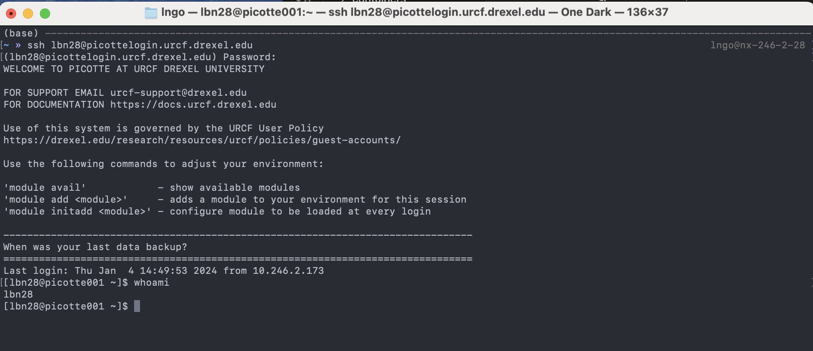

Accessing Picotte#
Remote login with SSH#
To access Picotte, we use a program called SSH[1], which lets you connect your terminal to another computer (called the “remote”) over the network. Once connected, commands you type will be sent to the remote machine, run there, and the output will be sent back to your terminal. This gives you the feeling of having your screen and keyboard directly connected to the remote machine. SSH is a powerful, flexible tool that’s very widely used in technical computing, and worth learning well.
To start, open your shell app (Terminal on macOS, Git Bash or WSL on Windows)
and type the following command, replacing YOUR_PICOTTE_USERNAME with your
actual Picotte username. This is usually the same as your Drexel
username (your email address without the @drexel.edu[2]).
ssh YOUR_PICOTTE_USERNAME@picottelogin.urcf.drexel.edu
You’ll be prompted to enter your password. This is your Picotte password, not your main Drexel password! Your Picotte account is seperate from your main Drexel account, and the passwords are independent from each other, they just use the same username for convenience.
Once logged in, you are presented with a welcome message and the following prompt,
with username replaced by your actual Picotte username:
[username@picotte001 ~]$
picotte001 is another name for picottelogin—this is telling us that we’re
connected to Picotte.
Let’s enter our first command! Type the command whoami, then press Enter to
send the command to Picotte. The command’s output is your username.
whoami


How does SSH work?#
What’s actually happening when we run the SSH command? Let’s imagine your username is bn23 When you say:
ssh bn23@picottelogin.urcf.drexel.edu
We’re telling SSH “I want to connect to the computer called
picottelogin.urcf.drexel.edu, logging in as the username bn23”.
picottelogin.urcf.drexel.edu is called the hostname or address of the
remote machine. It’s just a name that lets you refer to another computer on a
network. This is just like typing google.com into your web browser:
google.com is just a name you use to refer to Google’s servers;
picottelogin.urcf.drexel.edu is a name you use to refer to Picotte.
After you’re connected, when you type a command like whoami and press enter,
rather than running whoami on your local computer, SSH sends a message to the
remote machine, asking it:
Can you please run the command
whoamiand send me the output?
The remote machine (picottelogin.urcf.drexel.edu) does so, and responds:
OK, the output is:
bn23.
SSH then takes that output and prints it for you. In this way, it feels like you’re directly connect to the remote machine because SSH is shuffling the commands you want to run and their output over the network for you.
Fig. 4 SSH sends commands to a remote server and receives output back#